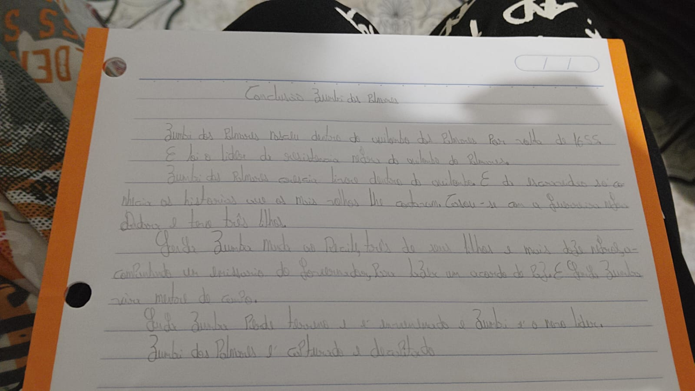

| Tipo / Elemento Analisado | Traços Comportamentais Mapeados | Códigos de Validação | Interpretação do Bloco |
|---|---|---|---|
| 1.3. MS Equilibrada | Estabilidade (0), Maturidade (1) | P21 | Respeito adequado a limites formais, hierarquias e bom senso na condução de suas apresentações. |
| 2.1. ME Ausente | Desmedida (6), Imaturidade (7) | N13 | Indica dificuldades em frear impulsos iniciais ou em estabelecer uma distância protetora do passado. |
| 4.1. MD Ausente | Desmedida (6), Inoportunismo (7) | N12 | Sinaliza pressa na tomada de ações e riscos de se expor ao ambiente exterior de forma desmedida ou precipitada. |
| 6.1.5. Concentrada | Seriedade (0), Concentração (1), Coesão (2), Intransigência (5), Resistência (5), Perseverança (5) | P9 P10 N4 N23 | Forte persistência e capacidade de foco em metas, apresentando riscos associados à rigidez ou intransigência extrema. |
| 6.2.1. Justaposto | Constrangimento (9), Insegurança (9) | N10 N1 | Pontua bloqueios de proximidade que geram inibição nas interações ou sentimentos momentâneos de timidez. |
| 6.3.2. Inconstante | Indisciplina (7), Inconstância (10) | N8 N29 | Denota flutuações na regularidade e ritmo das obrigações, com propensão a contornar regras rígidas. |
| 7.1.1. Ligada Evoluída | Seriedade (0), Concentração (1), Imparcialidade (1), Coesão (2) | P5 P7 | Excelente capacidade de associar ideias logicamente, encadeamento mental fluido e objetividade analítica. |
| 8.1.1. Pequena | Seriedade (0), Atenção (2), Perspicácia (2), Concisão (2), Precisão (4), Dedução (12) | P5 P6 P13 P15 | Mente minuciosa, dotada de aguçada capacidade de observação e foco direcionado a detalhes técnicos. |
| 8.2.1. Alta | Autoconfiança (2), Independência (5), Persuasão (12), Altivez (12) | P4 P16 N20 | Independência e forte projeção individual com grande capacidade persuasiva, exigindo atenção ao orgulho profissional. |
| 8.2.3. Estreita | Inibição (9), Insegurança (9), Interiorização (9), Fragilidade (10) | N10 N18 | Revela forte retração emocional e reserva, com tendência a guardar impressões e vulnerabilidade íntima. |
| 9.1.1. Retilínea | Moderação (0), Autocontrole (0), Estabilidade (0), Equilíbrio (0), Clareza (1), Dedução (12) | P6 P20 P24 P26 | Raciocínio linear estável e constância nos posicionamentos adotados, operando bem sob pressões de prazos. |
| 9.2.1. Horizontal | Autocontrole (0), Equilíbrio (0), Estabilidade (0), Concentração (1) | P18 P24 | Manutenção firme de propósitos estabelecidos, com direcionamento uniforme das forças operacionais diárias. |
| 10.1. Perpendicular | Moderação (0), Seriedade (0), Responsabilidade (0), Maturidade (1) | P8 P18 | Elevado rigor ético, retidão de conduta profissional e atitude firme diante de deveres assumidos. |
| 11.1.1. Cursiva | Sensatez (0) | P8 P20 | Fluidez relacional regulada pelo bom senso prático e por uma maturidade psicossocial bem estruturada. |
| 11.2.2. Arredondada | Maturidade (1), Síntese (2), Iniciativa (2), Adaptação (3), Objetividade (4), Atividade (4) | P14 P17 P20 P26 | Diplomacia interpessoal ativa aliada a um ritmo de trabalho focado em resoluções ágeis e descomplicação. |
| 11.2.5. Simplificada | Síntese (2), Autoconfiança (2), Objetividade (4), Economia (4), Precisão (4), Criatividade (12) | P2 P3 P7 P13 P15 | Grande capacidade de cortar caminhos burocráticos desnecessários, priorizando a economia de recursos e a precisão técnica. |
| 11.2.8. Personalizada | Antecipação (2), Desenvoltura (4), Improvisação (4), Criatividade (12), Imaginação (12), Persuasão (12) | P1 P3 P7 P10 P15 P25 | Expressão nítida de originalidade intelectual, engenhosidade para criar soluções sob medida e alta flexibilidade operativa. |
| 11.2.10. Assimétrica | Inadaptação (7), Imaturidade (7), Indecisão (8), Dispersão (10), Imprecisão (10), Emotividade (10) | N7 N8 N11 N17 N28 | Aponta descompassos estruturais gerados por reações emocionais que desviam temporariamente a precisão de execução. |
| 12.1. Apagada | Apatia (8), Acomodação (8), Desmotivação (8), Insegurança (9), Descompromisso (9), Fragilidade (10) | N1 N7 N8 N10 N18 | Denota fases de esgotamento de energia psíquica, vulnerabilidade crônica ou retração nas forças de iniciativa. |
| 13.2. Morosa | Instabilidade (7), Inadaptação (7), Indecisão (8), Insegurança (9), Emotividade (10), Desatenção (10), Inconstância (10), Dispersão (10) | N6 N7 N8 N11 N29 | Ritmo de trabalho leniente ou arrastado, associado a conflitos de insegurança e suscetibilidade à fadiga. |
| 15.3. Irregular | Indisciplina (7), Instabilidade (7), Indecisão (8), Desconfiança (8), Insegurança (9), Dispersão (10), Emotividade (10), Imprecisão (10) | N5 N7 N8 N10 N11 N17 N28 N29 | Mapeia variações bruscas de rendimento causadas por oscilações emocionais latentes e dispersão do foco prático. |